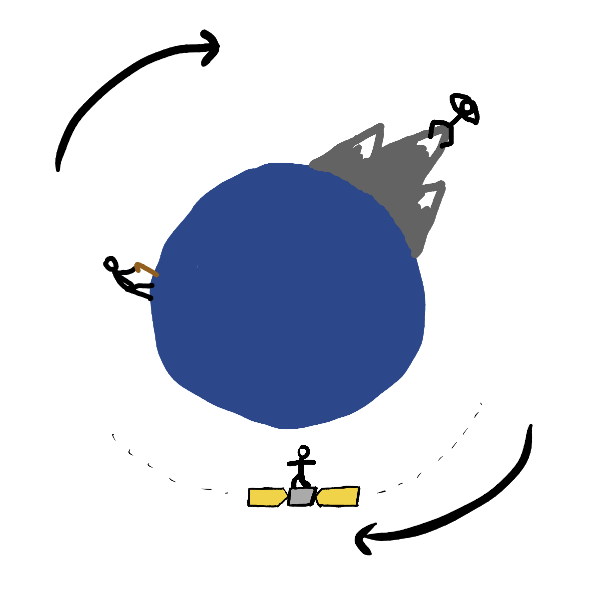
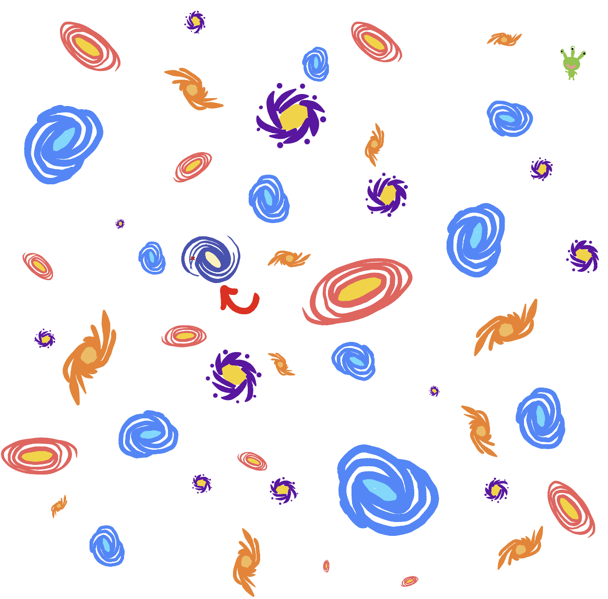
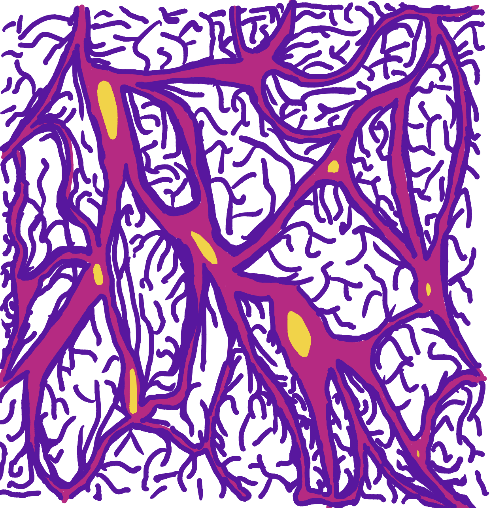
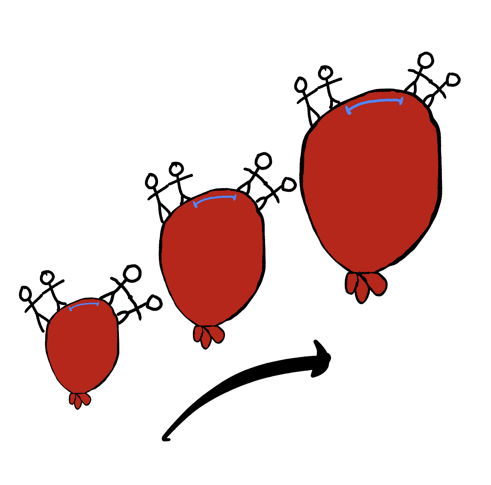
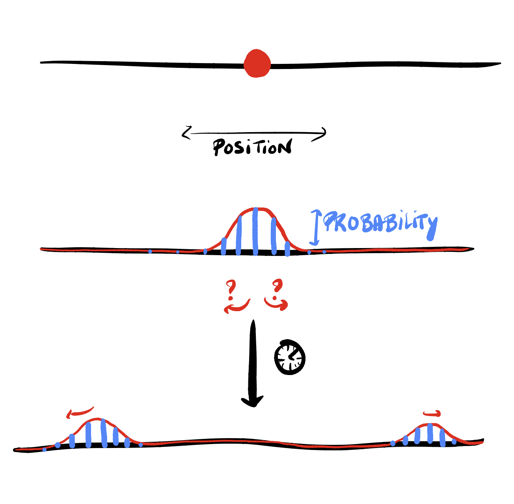
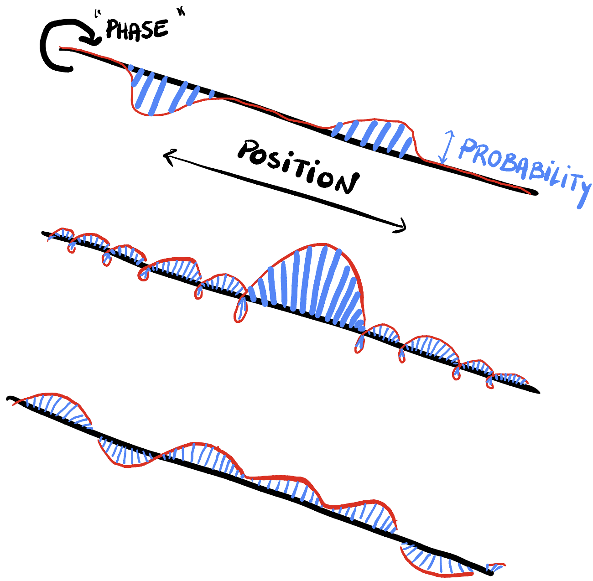
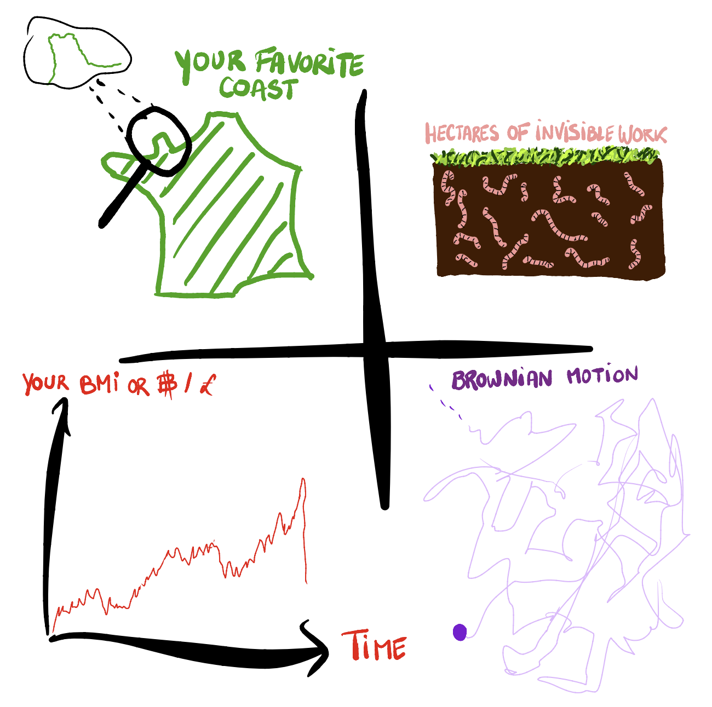

Mon doctorat en 12 esquisses.
Longue vie aux voyageurs

La gravité est simple : les objets avec une masse s’attirent mutuellement. Plus ils sont proches ou plus leurs masses sont importantes, plus l’attraction est forte. Cependant, ce n’est qu’une approximation de la réalité. Il y a aussi un effet sur le temps : le temps ne passe pas de la même manière pour tout le monde. La Relativité Générale (RG) est la théorie qui calcule ces effets. Prenons le cas de ces trois humains : une seconde pour l’un d’entre eux (celui sur la montagne ou le satellite par rapport à celui au sol) pourrait être légèrement plus longue pour un autre.
La différence entre leurs horloges est due à la différence de leurs vitesses et à la force gravitationnelle qu’ils subissent (ralentissant tous deux la perception du temps). Ce n’est pas un effet perceptible sur notre planète, trop légère. Augmentez la masse de la planète et la différence de vitesses, l’effet deviendra plus important. Cependant, le GPS n’aurait pas la précision actuelle si ces effets n’étaient pas pris en compte.
Vies effrénées

Donc, les gens peuvent avoir des rythmes différents pour leurs horloges : votre vitesse en RG est votre vitesse dans l’espace plus votre vitesse dans le temps. Cette vitesse est la rapidité avec laquelle vous ressentez le temps. Toutes les théories doivent supposer quelque chose qu’elles ne peuvent pas prouver : en RG, la vitesse de la lumière est supposée être toujours la même où que la mesure soit effectuée et la vitesse totale espace+temps de tout objet est égale à la vitesse de la lumière.
Les mathématiques de la RG suggèrent que nous vivons sur une feuille de papier (mais en réalité 4 dimensions, pas 2) qui peut être pliée lorsqu’il y a un objet massif dessus. Lorsque vous tombez de l’espace vers une planète, c’est comme glisser le long d’un toboggan qui mène à la planète. En regardant la courbe du toboggan, vous pouvez voir que la notion d’espace et de temps dépend de l’endroit où vous êtes (mais aussi de quand). Une ligne courbe est en effet plus longue qu’une ligne droite : cela explique pourquoi différentes personnes vivent des temps de voyage différents dans l’espace et le temps. Vous ou n’importe quoi (planètes, trous noirs, gaz, etc., mais aussi lumière) subissez la courbure de l’espace-temps et en retour, la courbez également. Toujours là ? Bien.
Étoiles mais pas célébrités

La Terre est l’une des 8 planètes en orbite autour d’une étoile – notre soleil. Chacune d’elles a des mouvements supplémentaires : elles tournent autour d’un axe Nord-Sud et cet axe oscille légèrement. Les orbites sont presque toutes circulaires, dans la même direction (sauf Vénus et Uranus), et toutes dans le même plan. Comme toutes les planètes faisaient partie de la même nuée de matière en orbite autour du soleil, leurs nombreux traits communs ne sont pas surprenants !
La gravité n’est pas spécifique à notre système. Nos planètes et étoiles n’ont rien de spécial non plus. Le même agencement pourrait exister pour les ~100 milliards d’étoiles de notre galaxie, la Voie lactée. Les astronomes ont calculé qu’il y a en moyenne au moins 1 planète par étoile : beaucoup de possibilités pour les colonies spatiales. Cependant, il nous faudrait 100 000 ans pour traverser même dans le meilleur des cas (à la vitesse de la lumière !), en ajoutant les détours autour du trou noir supermassif au centre de notre galaxie : Sagittarius A*. Les trous noirs supermassifs sont également des caractéristiques typiques des galaxies, à leur centre où la matière s’effondre.
Moïse dans une mer cosmique ?

Continuons de dé-zoomer, nous n’avons pas encore atteint l’échelle de la cosmologie, mais nous sommes sur le point d’y arriver. La Voie lactée appartient à un super-amas de galaxies appelé ‘Virgo’, un million de fois plus grand. Certains mouvements de ces galaxies ont été mesurés depuis la Terre. En 1929, Edwin Hubble a mesuré que certaines galaxies s’éloignent de nous et du super-amas, plus elles sont loin, plus elles s’éloignent rapidement. Il semble que les distances augmentent partout : c’est une preuve que l’univers est en expansion.
Cependant, à une certaine distance de nous, les galaxies restent avec nous et le cluster et pourraient même se rapprocher. Nous verrons que cela provient de la compétition entre deux forces : la gravité et l’expansion, toutes deux décrites par la RG. Si l’expansion continue, il est difficile de prédire exactement combien de galaxies resteront dans Virgo ; il sera probablement séparé en une centaine de sous-amas de galaxies, qui pourraient se regrouper davantage jusqu’à fusionner en super galaxies.
Toile Cosmique

L’échelle la plus grande que nous pouvons sonder par observations est appelée la ‘toile cosmique’, 10 millions de super-amas comme Virgo. Leur distribution dans l’espace a un schéma de toile clair : les super-amas se sont regroupés avec d’autres grâce à la gravité, mais aussi des bulles vides se sont formées grâce à l’expansion de l’univers.
Comment est-ce possible ? On a l’impression qu’il y a quelque chose qui pousse les choses au loin que nous ne pouvons pas voir. Mais nous pouvons le voir et c’est partout : la matière, la lumière, tout ce qui a de l’énergie dilate l’espace et c’est quelque chose que nous apprenons en écrivant l’équation de la RG pour l’univers. Cependant, il y a aussi quelque chose qui accélère cette expansion, ce qui explique pourquoi nous pensons que l’expansion ne s’arrêtera pas et ne s’inversera pas. Aucun des types habituels de matière, de lumière ou de forces ne permet cela : pouvez-vous imaginer quelque chose avec une pression négative ? Il y a autre chose là-bas, mais personne ne sait ce que c’est et c’est pourquoi on l’appelle maintenant l’énergie noire. Nous ne connaissons que certaines de ses propriétés et sa quantité dans l’univers (~70% !).
Une histoire à rebours du temps

L’une des façons les plus simples de représenter l’expansion est d’utiliser un ballon qui se gonfle (inexact). Cela montre ce que vous voyez depuis le centre du ballon, vous (galaxie) et vos amis environnants (galaxies). Certains de vos amis sont assez loin pour se tenir à la surface du ballon : c’est l’expansion. Certains d’entre eux se connaissent et se tiennent par la main ou se font des câlins : c’est la gravité. Vous pouvez imaginer que l’expansion a empêché certains d’entre eux de saisir les mains des autres ou les vôtres, voire même a rompu certaines poignées de main.
Donc, si l’univers est actuellement un gros ballon gonflé ; que se passe-t-il en remontant dans le temps ? Arrivez-vous à étreindre tous vos amis ? Qu’est-ce qu’un point qui s’embrasse lui-même ? Eh bien, c’est essentiellement l’origine des temps et c’est compliqué. Quelle est la bonne façon de remonter dans le temps ? C’est le travail des chercheurs de le découvrir et tout dépend du contenu de l’univers dans le temps. Pour l’instant, nous avons découvert que tous les types de matière, lumière et force habituels disparaissent dans un plasma chaud avant d’atteindre le ballon ponctuel. Les gens pensaient que le Big Bang était là : laissez-moi vous expliquer pourquoi ce n’est pas le cas.
L’échec du vieux Big-Bang contre l’expansion en 18 trous

Nous mesurons les distances en mesurant le trajet de la lumière, la vitesse la plus rapide permise. Mais à quelle vitesse se produit l’expansion ? J’ai mentionné plus tôt que plus un objet est éloigné de nous, plus il s’éloigne rapidement : y a-t-il une distance après laquelle cela pourrait être plus rapide que la lumière ? Non. L’expansion ne change pas la vitesse des galaxies mais rend le trajet plus long entre elles. Cela signifie toujours que la lumière envoyée de nous ou d’un voisin lointain pourrait devoir rivaliser avec une distance croissante, et parfois l’expansion l’emporte. Imaginez faire du golf sur un green en expansion… Parfois, la communication (c’est-à-dire la lumière atteignant d’une zone à une autre) est impossible entre deux régions de l’univers. C’est la raison pour laquelle même avec des outils puissants, nous ne pouvons pas voir l’ensemble de l’univers.
Nous parvenons toujours à recevoir des signaux micro-ondes du plasma du Big-Bang, voyageant encore aujourd’hui, venant de toutes les directions. L’analyse de ce signal a suggéré que des endroits trop éloignés les uns des autres pour avoir jamais été en contact à cette époque avaient en fait interagi (par exemple avec la même lumière). À partir de cette découverte dans les années 60, les gens ont décidé qu’il fallait un pré-Big-Bang (ou une extension) pour permettre un temps de ‘contact’ et l’ont appelé inflation.
L’inflation en pratique

Il n’y a pas vraiment de façon partagée d’imaginer à quoi ressemble l’inflation : toutes les particules et forces que nous connaissons aujourd’hui étaient absentes. Comme elle est principalement décrite par la RG, ses descriptions ne peuvent pas se passer de mathématiques. Le rôle de nombreux chercheurs est de proposer un modèle mathématique pour l’inflation et de calculer ce qu’il donne à des moments ultérieurs, à l’époque du plasma et même jusqu’à aujourd’hui. Enfin, vous comparez votre prédiction avec le signal mesuré : vous notez les modèles, et vous gardez le meilleur (le plus proche des mesures) : c’est ce que fait la science moderne.
Les empreintes de l’inflation sur le signal micro-onde sont subtiles mais en disent long sur les propriétés de ‘ce qui’ était présent pendant l’inflation. Nous savons maintenant que l’inflation a principalement vu un type d’énergie sombre – appelé inflaton – dominer, un type de pression négative. Encore une fois, un tel fluide déclenche l’expansion, ici la plus rapide de l’histoire de l’univers : taille multipliée par 1 [insérez 138 zéros], en environ 0. [insérez au moins 32 zéros] 1 seconde. De même que l’expansion de l’univers d’aujourd’hui, c’est comme être sur une feuille 2D d’espace-temps : c’est comme si un être de dimension supérieure étirait la feuille tout autour de vous. La principale différence avec l’expansion d’aujourd’hui est que l’univers était petit et donc soumis aux effets quantiques.
Être ou ne pas être quantique

La matière et les autres fluides du présent et du passé, et donc les particules dont ils sont constitués, doivent avoir eu une histoire légèrement différente selon l’emplacement car l’observation du ciel d’aujourd’hui le dit ; l’univers n’est pas homogène lorsque vous zoomez suffisamment, par exemple, il y a un nombre différent de galaxies selon les emplacements. L’origine (dans le temps) de cette inhomogénéité est supposée être la physique quantique pendant l’inflation. En remontant dans le temps, l’univers pourrait atteindre des échelles inférieures à ce que nous ne pouvons pas voir avec nos yeux et même plus petites. Mais dans ce cas, les choses ne suivent plus ce que l’on appelle la physique classique.
La physique classique est la science prédéterminée de ce que nous voyons tous les jours ; connaissant suffisamment de détails sur un système à un moment donné (masse, position, vitesse…), vous pouvez prédire l’évolution du système dans le temps et ce que vous mesurerez. Parfois, il vous manque des informations sur le système, et vous devez supposer différents scénarios pour le début et donc l’évolution. Chaque scénario a une probabilité ; ici par exemple une mesure imprécise ou incomplète de la position initiale et de la vitesse donne un manque de connaissance également plus tard.
Se sentir quantique

La physique quantique décrit également les particules avec des probabilités de présence dans l’espace et le temps, mais cela n’est pas dû à notre propre manque de connaissance, mais plutôt à une incertitude intrinsèque de l’objet qui apparaît lorsque l’on zoome. Un objet quantique peut être dans plusieurs états en même temps, comme s’il n’avait pas encore choisi d’état dans notre réalité jusqu’à ce que vous le mesuriez, alors que dans la physique classique, les choses existent déjà indépendamment de vous mais vous ne savez peut-être pas encore dans quel état. La façon la plus simple de le représenter est, encore une fois, de suggérer qu’il y a quelque chose en jeu dans une dimension supplémentaire. Nous introduisons généralement des fonctionnalités supplémentaires pour la probabilité dans l’espace et le temps ; permettant aux probabilités d’avoir une dimension angulaire appelée ‘phase’. Deux particules peuvent ainsi interagir comme des vagues, mais avec plus de complexité, par exemple, leur interférence (somme) dépend beaucoup de leur angle et peut annuler la probabilité de l’autre ou la renforcer.
Pour une onde de probabilité quantique donnée, certaines équations et principes dictent quelles formes sont autorisées dans l’espace et le temps. Par exemple, une onde peut avoir une probabilité concentrée dans l’espace (2ème esquisse) mais implique une probabilité super étendue pour toutes les vitesses autorisées (3ème esquisse). L’inverse est également autorisé, mais les probabilités de positions et de vitesses trop précisément connues simultanément sont impossibles : incertitude quantique en jeu.
Pas de vide total

Retour à l’univers minuscule mais en expansion, la physique quantique en jeu. Les physiciens pensent que, suffisamment loin dans le passé, l’univers composé d’inflaton pourrait être dans son niveau d’énergie le plus bas, appelé vide. Cependant, le vide quantique ne signifie pas strictement ‘0’ de quoi que ce soit, contrairement à la physique classique, car même au niveau le plus bas, la physique quantique montre des fluctuations d’énergie dans ce vide.
Théoriquement, le vide quantique ne peut pas avoir strictement 0 énergie, sinon cela contredirait l’incertitude quantique. Si nous définissons le vide comme l’absence de toute particule mesurée ; des paires de particules non mesurables sont autorisées à émerger de rien et à s’annihiler avant que vous ayez le temps de les mesurer. Ces particules sont appelées ‘virtuelles’, mais cela ne signifie pas qu’elles n’existent pas ; elles peuvent être mesurées indirectement en mesurant d’autres particules réelles interagissant avec elles. Dans tous les cas, nous savons avec certitude qu’il y a un processus énergétique en jeu apportant des fluctuations à l’univers jeune, ce qui donnera aujourd’hui des fluctuations dans le ciel (par exemple, le nombre de galaxies).
Un sous-monde dans chaque monde

Le dernier élément du puzzle concerne l’échelle. Comme je l’ai expliqué, il existe des situations quotidiennes où il nous manque des informations et où nous devons envisager tous les résultats possibles avec des probabilités. Cette incertitude classique est due à un manque d’informations sur le système. Le pire type provient d’une échelle plus petite que l’échelle d’étude. Rechercher des mathématiques ou des descriptions générales de ; la forme de la France, le cycle de l’herbe et des plantes, l’évolution de votre poids ou des bitcoins ou d’une molécule ; tout cela peut nécessiter de prendre en compte ce qui se passe à des échelles plus petites ; Normandie, vers en tant que recycleurs organiques, bruit de mesure, tous les individus sur un marché, collisions aléatoires avec d’autres particules, etc. Certains d’entre eux peuvent être modélisés comme un bruit de fond aléatoire avec des probabilités définies, cela s’appelle la modélisation stochastique.
La plupart du temps, il existe une échelle à laquelle vous pouvez arrêter de zoomer car elle a une influence négligeable par rapport à votre précision souhaitée. Et si nous faisions cela juste avant de zoomer sur la physique quantique pour étudier l’inflation cosmique ?
“Relativité Générale non-Linéaire pour l’inflation stochastique”

Vous avez maintenant tout ce dont vous avez besoin pour comprendre ma thèse de doctorat. Parce que la relativité générale et la physique quantique ne sont pas compatibles mais échangent des phénomènes, je veux étudier la propagation dans le temps des fluctuations quantiques initiales de l’inflation en les traitant comme un bruit stochastique lorsqu’elles deviennent classiques et donc compatibles avec la Relativité Générale. Si cela fonctionne, cela me permettra de prédire la distribution des types de matière d’aujourd’hui dans l’univers, par exemple les motifs des amas et des galaxies, mais aussi de valider ou d’invalider certains types de débuts pour l’univers.
Si cela reste flou, contactez-moi pour des questions ou méditez avec ces illustrations générées par chatGPT à partir des mots-clés de ma thèse ! Merci de votre lecture.
Many thanks to A. McWhinnie for precious advice.